And here are two more Valentines to favorite DC Comics!
Tue, 14 Feb 2012 21:22:43 -0500
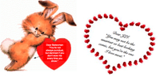
And here are two more Valentines to favorite DC Comics!
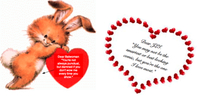
And here are two more Valentines to favorite DC Comics!
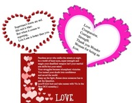
More Valentines!
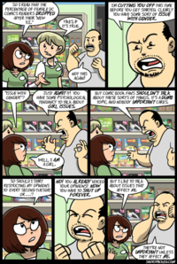
itswalky:
Well. This strip was supposed to run on Wednesday, but I dated it wrong, and it ran today. Half an hour after update time, I randomly popped into my SP! dash, and suddenly wondered how all these folks were commenting on a comic FROM THE FUUUTURRREE!
Crap.
Um.
Enjoy.
Does this stuff happen? Really. I am SHOCKED. SHOCKED I tell you.
I was saddened again this year by the trend of superhero Valentines to become more and more single sex. Years ago DC and Marvel licensed Valentines had both male and female characters. There were Superfriends sets, for example, that had all the characters.
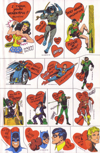
Batgirl and Catwoman popped up Batman sets based on the animated series:
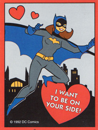
And Catwoman had her own card in very early sets.
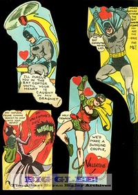
And as recently as when the Justice League was on the air, you had Hawkgirl and Wonder Woman included.
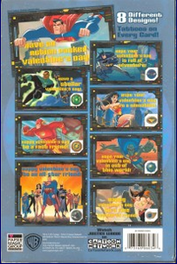
Last year and this year, we saw Batman Brave and the Bold valentines featuring only male characters.
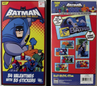
This year there was also a Green Lantern set but, alas, no Carol Ferris.
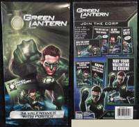
Marvel is a bit better. While the Thor set that I saw had no Jane, the X-Men sets have featured Wasp. And the Wolverine set, which I believe was from last year, had Shadowcat.
I know there are people who suggest I have better things to be concerned about, but as someone with younger kids and who buys these items, it bothers me that something that was once unisexual has become more bifurcated. It’s little things like these that will keep superheroes a boys club.
Moving on, here are two vintage Valentines that I think are perfect for this blog:
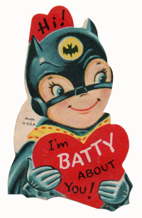
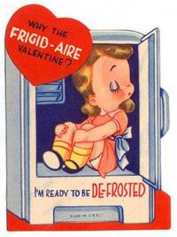
(thanks to monopole for finding this one !)
Did you have superhero Valentines growing up? Did they have both male and female superheroes.
Yesterday’s battle of the blondes was won by Stephanie Brown and Kara Zor-El. They will move to the next round.
Today we have two long running friendships and a wonderful battle of sisters!!
The first pair have been pals since the first appeared in comics:
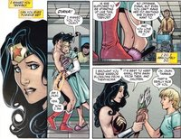
Wonder Woman and Etta Candy! Woo Woo.
Vs.
Wonder Woman’s little sister Donna Troy aka Wonder Girl aka Troia and Princess K’oriandr aka Starfire aka Kory
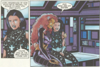
Voting is open 8PM EST
http://micropoll.com/t/KEcOAZJqbM
I’m going to run a few things for Valentine’s Day tomorrow but I am looking for your input too!
If you could send a Valentine to your favorite DC Comic, what would it say?
If you could send a Valentine to your favorite DC Women, what would it say? (SFW, guys!)
Drop them to me in my ask or comment below and I’ll post it tomorrow.
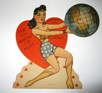
Revealed at Toy Fair a 6” Catwoman coming from Mattel.
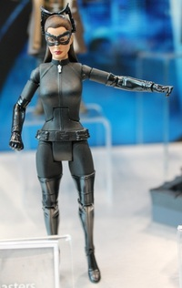
It’s rare that I’m left speechless. But um, meet THE MASOCHIST!!!!!
SUPERMAN #9
Written by KEITH GIFFEN and DAN JURGENS
Art by DAN JURGENS and JESUS MERINO
Cover by IVAN REIS and OCLAIR ALBERT
1:25 B&W Variant cover by IVAN REIS
On sale MAY23 • 32 pg, FC, $2.99 US • RATED T
• SUPERMAN faces new supervillainess MASOCHIST!
• How can Superman fight an opponent he can’t touch?
• LOIS LANE faces a turning point in her career as a journalist.
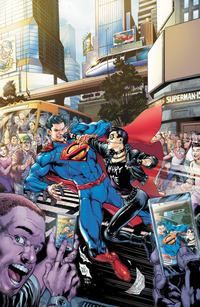
Via io9. Well that certainly is a lot of tentacles.
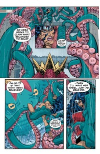
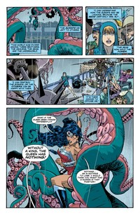
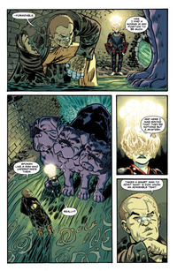
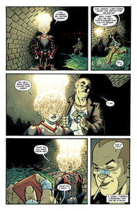
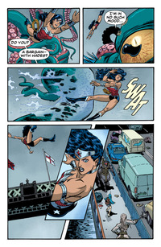
The world (or members of this tiny little niche of the world as it would seem) has voted and Barbara Gordon’s Galentine is … Dinah Laurel Lance aka Black Canary.
Today we have a battle of one thing DC has never been short of — blonde girls!
In one corner we have BFF (no “s” because already is plural -see below) the delightful Stephanie Brown version of Batgirl and the post-Crisis but pre-new52 Supergirl, Kara Zor-El
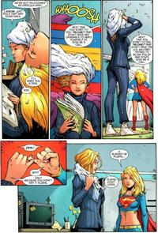
vs.
The adorkable YJ version of Wonder Girl, Cassie Sandsmark and Cissie King-Jones aka Arrowette:
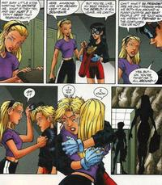
Voting is open until 8PM EST.
http://micropoll.com/t/KEcOAZJnbt
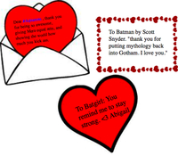
Last night on Twitter I asked people what Valentine’s to their favorite comics would be. Here are a few.
Arguments aside on whether this is right or wrong, this artwork looks great.
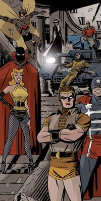
I asked for Valentines to favorite characters and I got some!
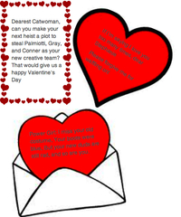
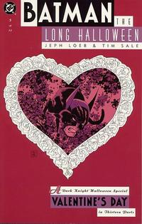
Huntress, Helena Bertinelli version, and Renee Montoya beat out Huntress, Helena Wayne, and Power Girl for favorite Galentine.
Today we have the match up of two pairs who definitely don’t play for the side of the angels.
The first couple met in Gulag who the knows how long ago and stayed BFFs through thick, thin and chopped off heads.
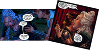
Scandal Savage and Jeanette from the Secret Six!
vs.
Whether pals, sirens or Gotham Girls, these two have great chemistry and know how to fun!
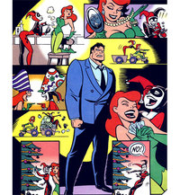
Harley Quinn and Poison Ivy
Voting is open until 8PM EST
http://micropoll.com/t/KEcOAZJqbN
Black Orchid joins the team. This should be good.
JUSTICE LEAGUE DARK #9
Written by JEFF LEMIRE
Art by MIKEL JANIN
Cover by RYAN SOOK
On sale MAY 23 • 32 pg, FC, $2.99 US • RATED T
• New series writer JEFF LEMIRE introduces a new team roster and a new mission!
• Featuring JOHN CONSTANTINE, ZATANNA, DEADMAN, BLACK ORCHID and more!
• Constantine and the team must steal a map to the source of all magic out of the clutches of FELIX FAUST!
• The first of a four-part story that will have lasting implications for the entire DC Universe.
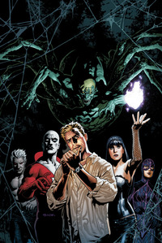
From the fine folks at Hasbro - Wonder Potatoe Head! Fresh from the Toy Fair and due out by the end of the year. Nice to Wonder Woman getting a Tuber Tribute like Batman and Superman.
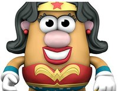
DC has release the solicit for Earth 2 and those of you who are fans of the JSA will pleased:
EARTH TWO #1
Written by JAMES ROBINSON
Art by NICOLA SCOTT and TREVOR SCOTT
Cover by GREG CAPULLO
1:25 Variant cover by IVAN REIS and JOE PRADO
On sale MAY 2 • 40 pg, FC, $3.99 US • RATED T
• First issue of an ongoing series from writer JAMES ROBINSON and artist NICOLA SCOTT!
• Who are the heroes of EARTH 2 – and what befell them?
• Starring ALAN SCOTT, JAY GARRICK and many others!
• You may think you know Earth 2…but this is DC Comics – The New 52, where anything can happen!
• Don’t miss the extra-sized debut issue!
One would hope they could use the “anything can happen” concept to find a slot for folks like Wally West and Donna Troy (or two former Batgirls), but I’ve been told that is not in the cards.
But who knows? Who would you like to see show up on Earth Two? Some of the Infinity, Inc. folks? More of the old JSA?
And really if they are drawn by Nicola Scott, you know they will look good.
I know this may be a surprise for some people but I wasn’t an avid hater of Power Girl’s boob window. (It was the Huntress “Belly Window” that drew most of my wrath in costuming). Not that it wasn’t problematic at times, but that was mainly due to the artist who was drawing it. In the hands of Sami Basri or Amanda Conner? It was fine. In the hands of another artist? Grotesque.
True, it was not always her costume as seen in the image below. But it was her most popular one. (I wrote about the history of the window last year and it is still one of my most popular posts.)
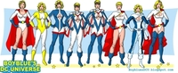
So why the tolerance if not a bit of fondness for the boob window? I think because it fit her personality. From the day she first popped into comics, filled with, as my grandmother used to say, piss and vinegar Power Girl was one of the more direct, combative and pugilistic female characters in comics. Her boobs, like her, were in your face and pity the fool who mocked her.
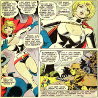
Whenever I saw Power Girl show up with that window, I always felt there a little “here you go fan boys - nothing subtle for you.” That’s why Amanda Conner’s take on Power Girl made the character so popular (including winning the character/artist tournament I just ran). Conner got that the window was a way to take the sniggling and ogling that goes, for some, hand in hand with superhero comics and mocked it. Sure Empowered does that too, but this was DC with its bigger, ahem, audience. And again, that sense of mockery was only there with artists who got it. Not all did.
So now she has a new costume for Worlds’ Finest:
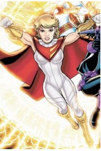
Last night I asked one of the book’s artist Kevin Maguire, who was discussing the new costume, who designed it:
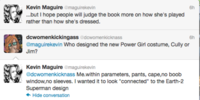
“Connected to the Earth-2 Superman design.” That made me even a bit sadder to see it go. For all the problems of the boob window, it gave Power Girl her own iconic look. I’m a sucker for costume iconism. Sometimes it is the only continuity the character has. It’s one of the reasons I don’t totally hate Wonder Woman’s “bathing suit”. And while the Power Girl costume drew on the same colors as Superman’s, it was her own.
So like so many other things in the new 52, we have another thing disappear. The boob window has been boarded up. The view wasn’t always pretty, but I am, like many other things I’ve lost this year, sad to see it go.
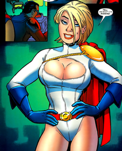
On Friday Tora and Bea won their match with Zatanna and Mikey and will move on to the next round. Today’s match is showdown of Huntress vs. Huntress!
In one corner we have the pre-Crisis Power Girl and Huntress aka Helena Wayne. (Though this scan is post-Crisis. But pre NEW 52, but their friendship was so strong it survived time disruption/Crisis shenanigans.)
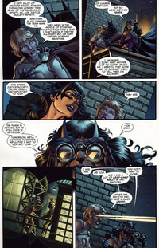
Vs.
Post-Crisis Helena Bertinelli and Renee Montoya, aka The Question. Here Helena decides that she’ll take the mark of Cain from Vandal Savage for her pal in Greg Rucka’s Pipeline.
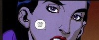
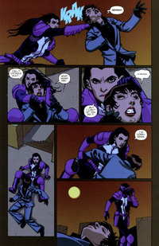
Voting is open until 8PM EST.
http://micropoll.com/t/KEcOAZJnbO